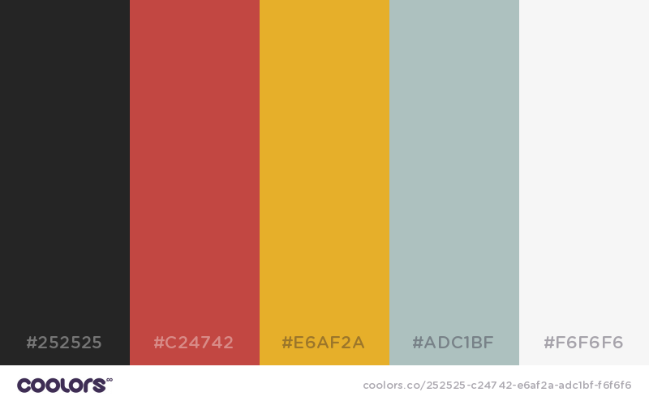

Página estática alojada en github y la cual está abierta a colaboraciones de mejora del código como de traducción del contenido.
La paleta de colores de esta página es https://coolors.co/app/252525-c24742-e6af2a–70bd5b-f6f6f6 ```sass /* Coolors Exported Palette - cohttps://coolors.co/app/252525-c24742-e6af2a-adc1bf-f6f6f6 */
$color1: #252525; //rgba(37, 37, 37, 100) $color2: #c24742; //rgba(194, 71, 66, 100) $color3: #e6af2a; //rgba(230, 175, 42, 100) $color4: #70bd5b; //rgba(112, 189, 91, 100) $color5: #f6f6f6; //rgba(246, 246, 246, 100) ``` 
Hay mucho software por ahí muy bueno y sencillo de utilizar. Para este site he usado los siguientes scripts o librerías.